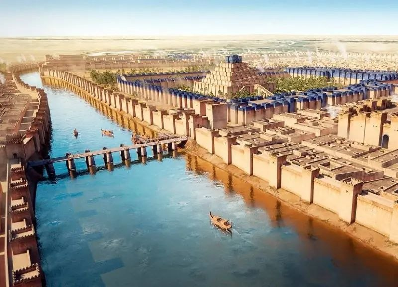
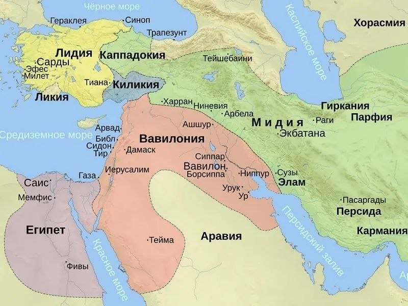
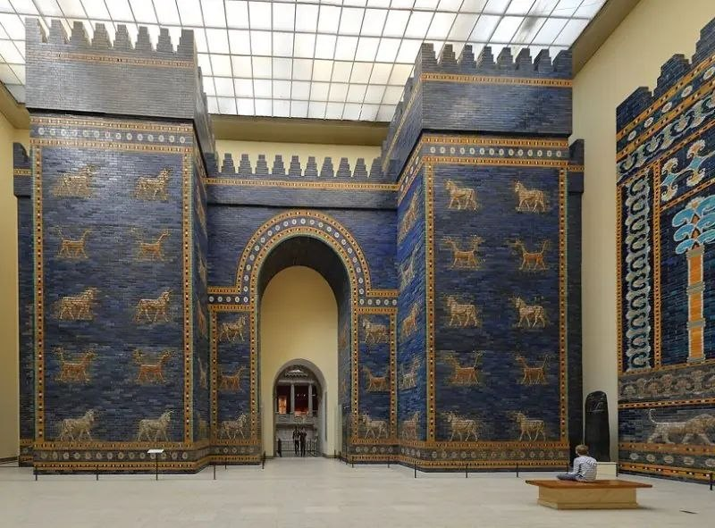
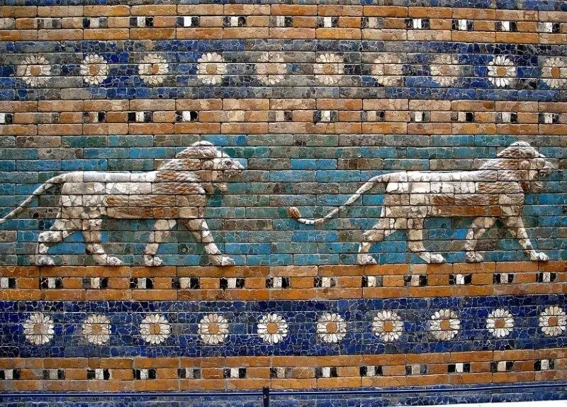
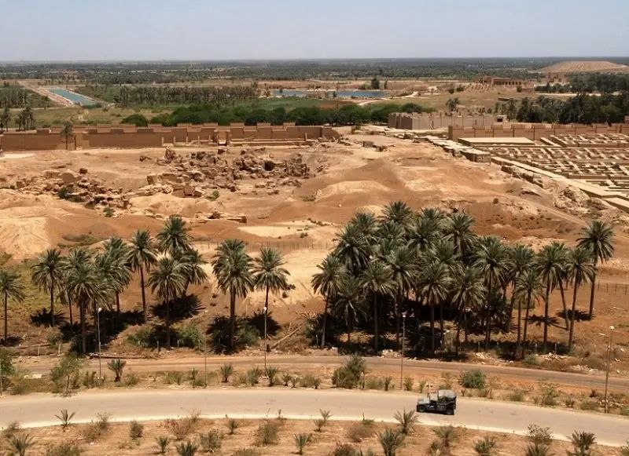
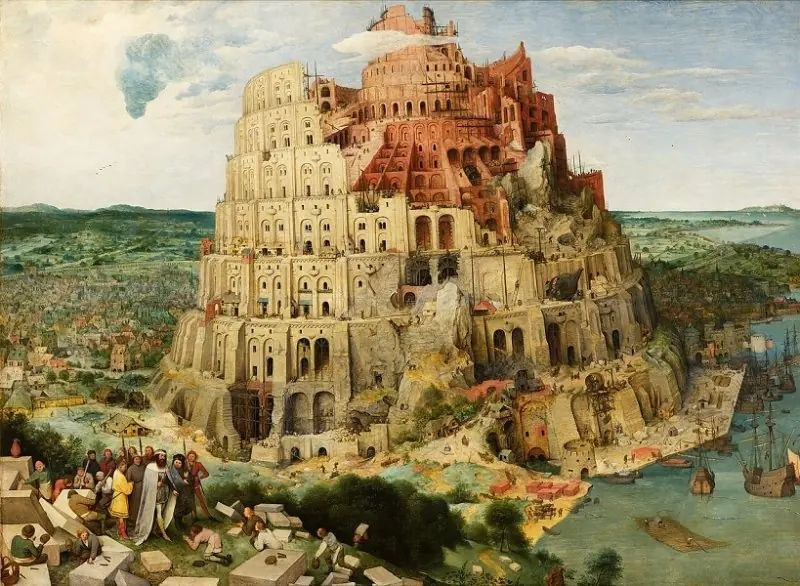

История возникновения и раннее развитие
Вавилон (на аккадском языке Bāb-ilim — «Врата бога») — это один из самых величественных, влиятельных и легендарных городов не только древней Месопотамии, но и всей истории человечества. Расположенный на берегах полноводной реки Евфрат, примерно в девяноста километрах к югу от современного Багдада, Вавилон на протяжении тысячелетий выступал главным политическим, научным, культурным и религиозным сердцем Ближнего Востока.
История этого колоссального государства уходит своими корнями в III тысячелетие до нашей эры. Изначально Вавилон представлял собой скромное, ничем не примечательное провинциальное поселение, затерянное в тени могущественных и древних шумерских городов-государств, таких как Урук, Ур, Лагаш и Исин. Первые письменные упоминания о нем встречаются в хозяйственных документах эпохи аккадских царей (XXIII–XXII века до нашей эры), когда город функционировал как важный региональный торговый и религиозный узел местного значения.
Звездный час Вавилона начался в начале второго тысячелетия до нашей эры, когда на территорию Месопотамии переселились западносемитские племена амореев. В 1894 году до нашей эры вождь амореев по имени Суму-абум захватил небольшой Вавилон и основал здесь независимую царскую династию. Опираясь на дипломатию, военные союзы и постепенное подчинение ослабленных соседей, вавилонские цари превратили скромный полис в столицу мощного централизованного государства, вошедшего в историю как Старое Вавилонское царство.
Пик расцвета (VI в. до н. э.)
Наивысшего могущества, экономического процветания, колоссального масштаба и архитектурного величия Вавилон достиг в VI веке до нашей эры во время правления выдающегося царя Навуходоносора II, правившего с 605 по 562 годы до нашей эры. Этот период получил название Нововавилонского царства (или Халдейской империи). При Навуходоносоре II Вавилон превратился в крупнейший, самый благоустроенный и урбанизированный мегаполис древнего мира, поражавший воображение всех античных путешественников, включая греческого историка Геродота.

Великая река Евфрат разделяла мегаполис на две части — Старый и Новый город, которые соединялись между собой прочным каменным мостом. Общая площадь укрепленной территории составляла около 10 квадратных километров, а с учетом внешних фортификационных линий и пригородов городская агломерация занимала еще большую площадь.
Масштабы и планировка
Внутренняя область города занимала около 400 гектаров, а вместе с внешним кольцом стен — более 1000 гектаров. Мост длиной около 120 метров впервые в истории объединил два берега Евфрата.
Численность населения
От 150 до 200 тысяч человек постоянно проживало в стенах Вавилона. Для древнего мира такая концентрация жителей была рекордной.
Фортификация
Тройное кольцо стен с ровом из воды Евфрата. По верху внешней стены Имигур-Энлиль могла свободно разъехаться четверка боевых колесниц.
Повседневная жизнь вавилонян
Жизнь в Вавилоне отличалась невероятно высокой степенью социальной организации, развитой правовой культурой, сложной бюрократией и передовой экономикой. Благодаря своему уникальному географическому положению на пересечении важнейших речных и сухопутных путей Евразии, Вавилон стал главным международным торговым перекрестком древнего мира. Сюда стекались караваны с пряностями из Индии, благовониями из Аравии, лесом и металлами из Анатолии, а также зерном и тканями из Египта и Сирии.
В отличие от ранних шумерских городов, где доминировала храмово-государственная монополия, в Вавилоне получила мощное развитие частная собственность. Земли, ремесленные мастерские, торговые склады и корабли принадлежали не только царю и жрецам, но и влиятельным частным купеческим семействам. Ярким примером служат архивы знаменитого вавилонского торгового дома Эгиби, занимавшегося крупными финансовыми операциями, кредитованием под проценты и недвижимостью на протяжении нескольких поколений.
Социальная стратификация общество четко декретировала права граждан. Вавилонский социум делился на три основные группы: полноправные свободные граждане (авилумы), зависимые работники и царские служащие (мушкенумы), а также рабы (вардумы). При этом вавилонские рабы сохраняли право иметь личное имущество, заниматься ремеслом и торговыми делами и даже выкупать себя на волю при определенных условиях.
Величайшая личность: Царь Хаммурапи
Хотя Навуходоносор II возвел самые грандиозные архитектурные памятники, самым известным, мудрым и выдающимся правителем раннего Вавилона был царь Хаммурапи, правивший в 1792–1750 годах до нашей эры. Хаммурапи вошел в вечную историю как великий реформатор и законодатель. Он объединил разрозненные юридические обычаи, племенные традиции и судебные прецеденты месопотамских народов в единый, универсальный и жесткий свод законов.
Черная базальтовая стела и принцип талиона
Свод законов из 282 статей был высечен клинописью на двухметровой черной базальтовой стеле, увенчанной рельефным изображением самого царя, получающего знаки власти из рук бога солнца и справедливости Шамаша.
Законы опирались на принцип талиона (зеркального возмездия): «око за око, зуб за зуб». Наказание строго соответствовало преступлению, но дифференцировалось по статусу: кара для авилума и вардума существенно различалась. Кодекс детально регулировал браки, наследство, налоги, ответственность судей за предвзятость, аренду земли и даже строительные нормы — если построенный дом рушился и давил хозяина, строителя приговаривали к смертной казни.
Священный пантеон и культ бога Мардука
Духовная жизнь Вавилона была неразрывно связана с культом покровителя города — бога Мардука. С возвышением Вавилонского царства жрецы утвердили Мардука верховным главой всего месопотамского пантеона. Согласно великому эпосу «Энума Элиш» («Когда вверху»), именно Мардук сразил чудовище хаоса Тиамат и из ее тела сотворил упорядоченный космос и людей.
Главным государственным событием был многодневный праздник Акиту, проходивший весной. В ходе ритуалов царь складывал знаки власти перед статуей Мардука в храме Эсагила, смиренно выдерживал символическую пощечину от жреца и лишь после этого получал корону вновь, подтверждая свое право править на следующий год.
Наука, астрономия и математика в Вавилоне
Вавилонские ученые, жрецы и писцы достигли невероятных, поражающих воображение высот в точных науках, заложив фундаментальные основы современного научного знания.
Вавилоняне создали позиционную систему исчисления, основанную на числе 60. Именно этому математическому достижению мы обязаны современным делением часа на 60 минут, минуты на 60 секунд, а геометрической окружности — на 360 градусов.
Жрецы-астрономы вели непрерывные наблюдения за движением небесных тел с платформ высочайших зиккуратов на протяжении веков. Они создали точные лунно-солнечные календари, научились безошибочно предсказывать солнечные и лунные затмения, разделили зодиакальный круг на 12 равных созвездий и дали имена ключевым планетам.
В Вавилоне медицинская практика сочетала в себе эмпирические методы лечения (хирургические надрезы, использование лечебных трав, мазей, минералов и компрессов) с религиозными заклинаниями, поскольку болезни часто трактовались как проделки злых духов или кара богов.
Главные архитектурные чудеса Вавилона


Ворота Иштар
Главный северный въезд в город, посвященный верховной богине любви, плодородия и войны Иштар. Ворота и прилегающая к ним Дорога Процессий были облицованы блестящим синим и лазурным глазурованным кирпичом с рельефными изображениями священных быков и мифических драконов-сирруш с телом леопарда, змеиным хвостом и орлиными лапами.
Сады Семирамиды
Одно из 7 чудес света древнего мира. Согласно легенде, царь Навуходоносор II приказал возвести многоуровневые террасные сады с вечнозелеными деревьями, экзотическими цветами и каскадами водопадов для своей молодой жены — мидийской царевны Амитис (в греческой традиции ошибочно названной Семирамидой), которая тосковала по зеленым холмам своей родины.
Вавилонская башня (Этеменанки)
Грандиозный ступенчатый храм-зиккурат высотой более 90 метров, посвященный верховному богу города Мардуку. Его огромные террасы уходили высоко в небо, поражая воображение паломников со всего света и став историческим прообразом знаменитого библейского мифа о смешении языков.
Быт вавилонян
Вавилонское общество крайне ценило грамотность. Будущие администраторы, юристы и жрецы обучались в специальных школах — эдубах («домах табличек»). Программа была суровой и занимала много лет: ученики запоминали сотни клинописных знаков, переписывали древние шумерские тексты и осваивали сложные вычисления.
В повседневном же питании, помимо зерновых хлебов и фиников, ключевую роль играло пивоварение. В Вавилоне производили более 20 сортов ячменного и финикового пива. Густой напиток пили через специальные соломинки, а законы Хаммурапи отдельно регламентировали работу трактиров и строго карали хозяев за наценки или разбавление напитка.
Падение великого города и исторический закат
Несмотря на свою колоссальную мощь и неприступность, величайший мегаполис древности не смог вечно противостоять внешним завоевателям и внутренним политическим кризисам.
Во время Персидского завоевания (539 год до нашей эры), воспользовавшись глубоким внутренним расколом, недовольством жрецов последним вавилонским царем Набонидом и его пренебрежением к богу Мардуку, персидский царь Кир II Великий подошел к стенам Вавилона. Согласно описаниям Геродота, персидские инженеры отвели воды Евфрата в гигантское искусственное озеро, после чего армия вошла в город по обнажившемуся руслу реки через водяные ворота прямо во время религиозных празднеств. Вавилон пал практически без боя.

Под властью персов город оставался важным центром, а позже Александр Македонский даже планировал сделать город столицей своей империи. Однако в 323 году до нашей эры Александр внезапно скончался во дворце Навуходоносора. После последовавших войн диадохов преемник Селевк I Никатор основал неподалеку новую столицу — Селевкию на Тигре, куда переселил часть жителей. Это окончательно подорвало экономику мегаполиса, и к I веку нашей эры великий Вавилон превратился в безмолвные песчаные руины.
Наследие, библейские сюжеты и культурный след
Имя Вавилона навсегда впечаталось в коллективную память человечества, превратившись в устойчивый и глубокий культурный символ. В христианской традиции, особенно в Книге Откровения Иоанна Богослова, образ «Вавилонской блудницы» и мифического Вавилона олицетворяет высшую степень развращенности, духовного падения, гордыни и порочности материального мира, противостоящего божественному началу.

Выражение «Вавилонское столпотворение» прочно вошло в лексикон мировых языков как универсальное обозначение полного беспорядка, шумной неразберихи и невозможности прийти к согласию из-за различия мнений, культур или языков.
Фундамент современной цивилизации
Вавилон оставил колоссальное научное и правовое наследие, подарив человечеству системы измерения времени, принципы государственного законодательства, основы астрономии и доказав, на что способен масштабный инженерный гений организованного человеческого общества.